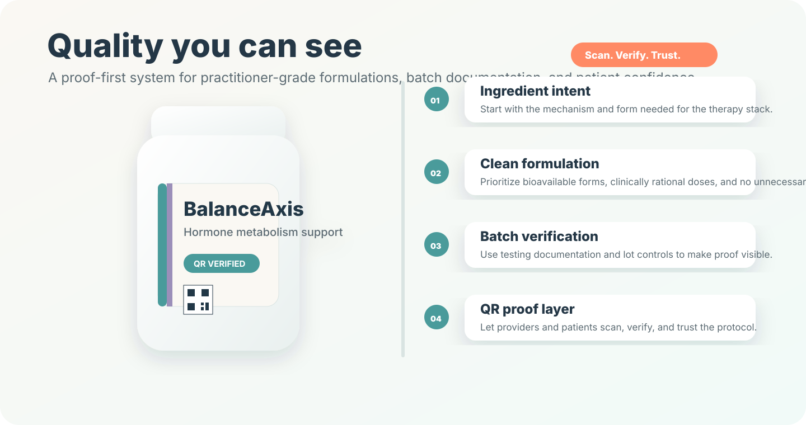

Our Quality
NutraAxis quality is designed to be visible: clear formulation standards, batch documentation, QR verification, and transparent claims language that practitioners and individuals can rely on.

Proof-first philosophy
Quality should be easy to understand before an individual ever opens the bottle. NutraAxis is designed around visible proof, practitioner confidence, clean label discipline, and evidence-based support language.
That means the quality experience is not hidden behind a request form or buried in technical language. It is built into packaging, product education, and the digital experience.
Each product is designed to support lot-level traceability and QR-accessible quality documentation as the verification layer matures.
Quality architecture
Prioritize bioavailable forms and delivery formats that make sense for the intended use.
Use evidence-supported amounts based on published nutritional research.
Ingredients should complement the broader supplement formulation rather than duplicate or create confusion.
Batch-level documentation and transparent testing cues make quality easier to trust.
Copy should use compliant structure/function language and avoid disease-treatment promises.
Quality also includes clear instructions, consumer-friendly education, and practical usability for practitioners and individuals alike.
How verification works
Start with the intended wellness use and the body system being supported.
Select ingredients and forms that fit the desired nutritional goal and quality standard.
Manufacture with documented controls, lot tracking, and clean label expectations.
Maintain testing documentation and batch records for quality review.
Make proof easier to access through QR-linked product education and batch transparency.
Accessible quality standards
Our quality voice should feel like a clear, trustworthy explanation: specific, calm, transparent, and easy to follow. That is how NutraAxis turns proof into confidence.
Publishing note: final product pages should include the applicable Supplement Facts, ingredient disclosures, required disclaimers, and any batch/QR verification links approved for launch.
NutraAxis quality is built to make every wellness decision feel clearer, more confident, and well-supported.